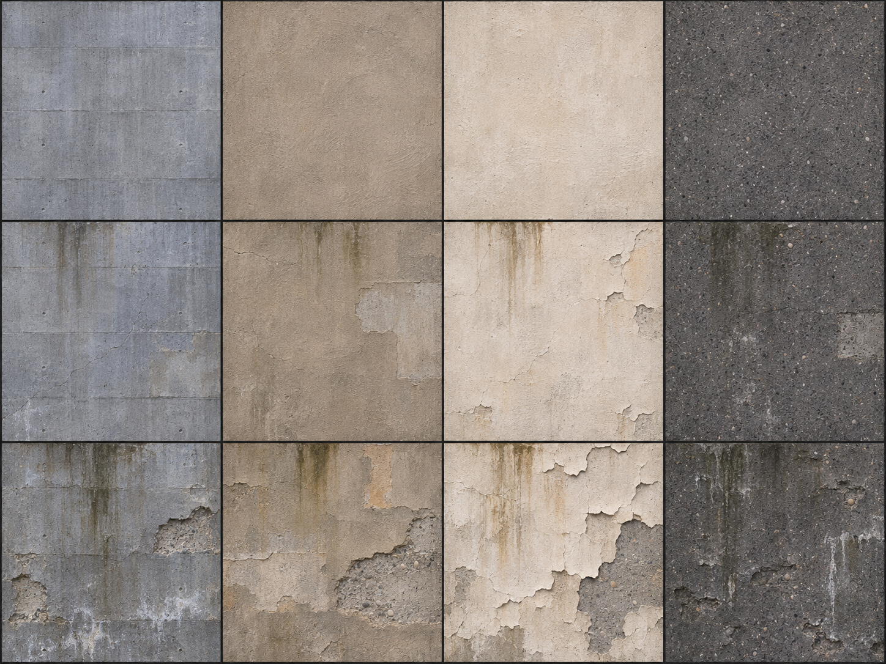
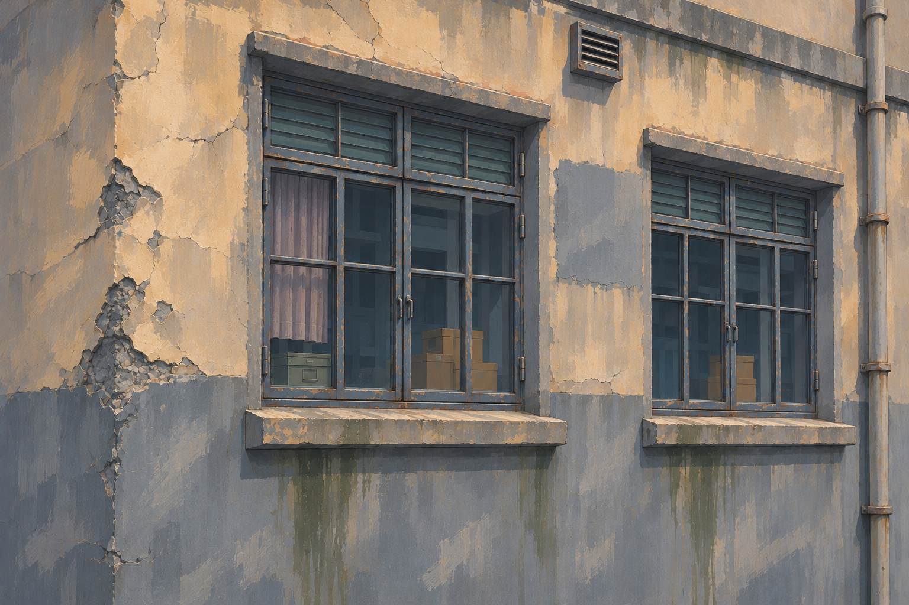
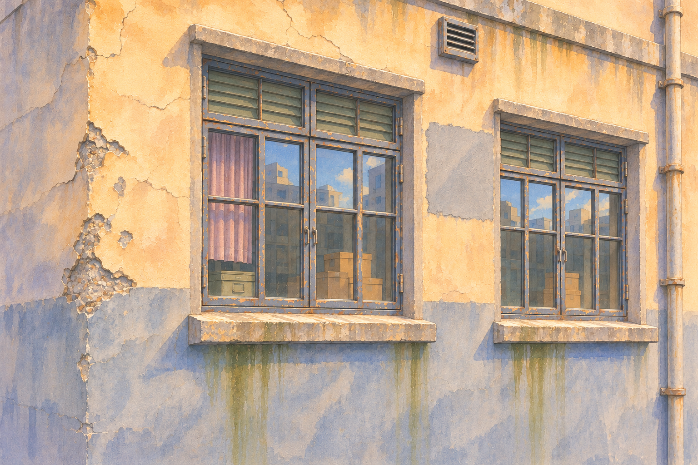
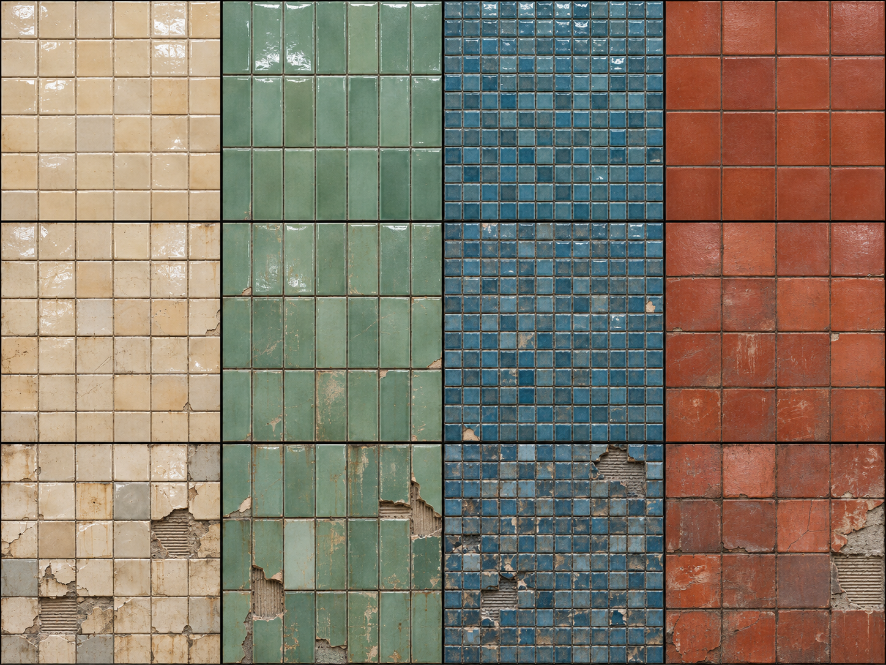
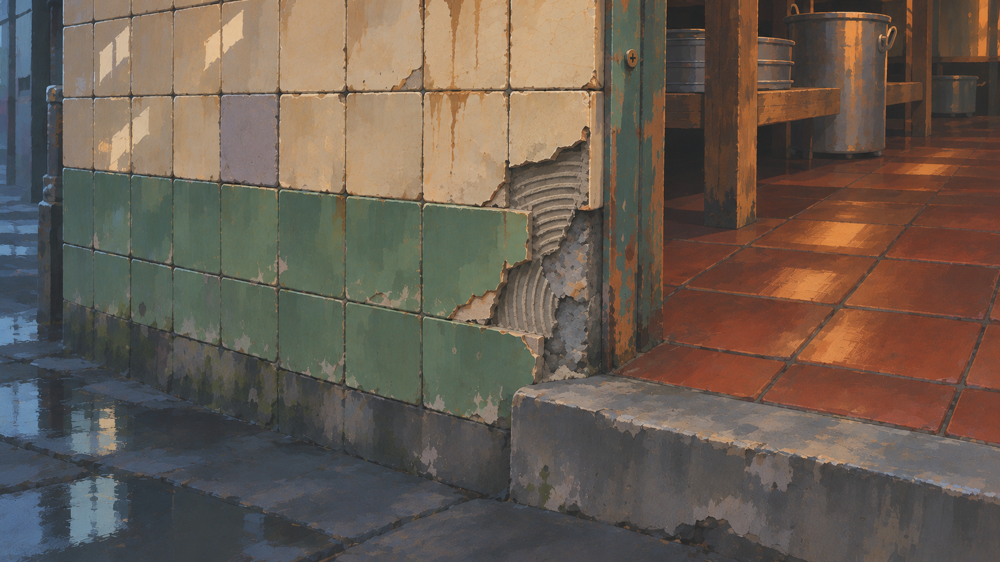
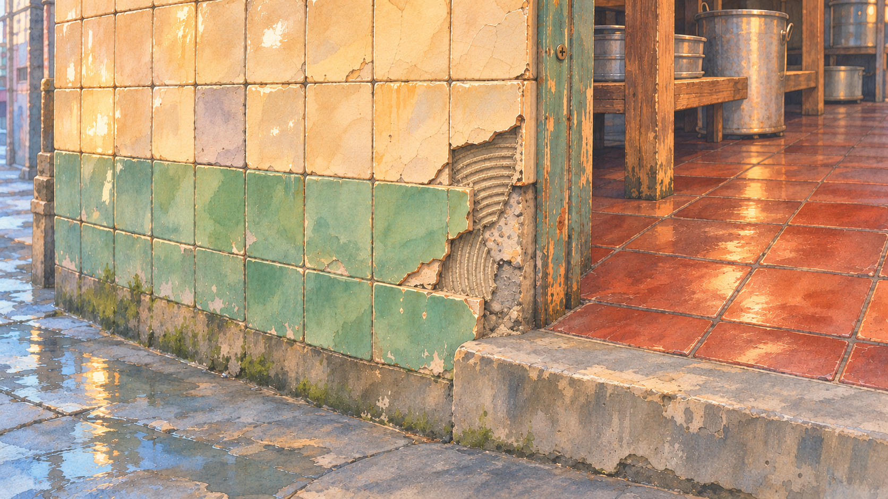
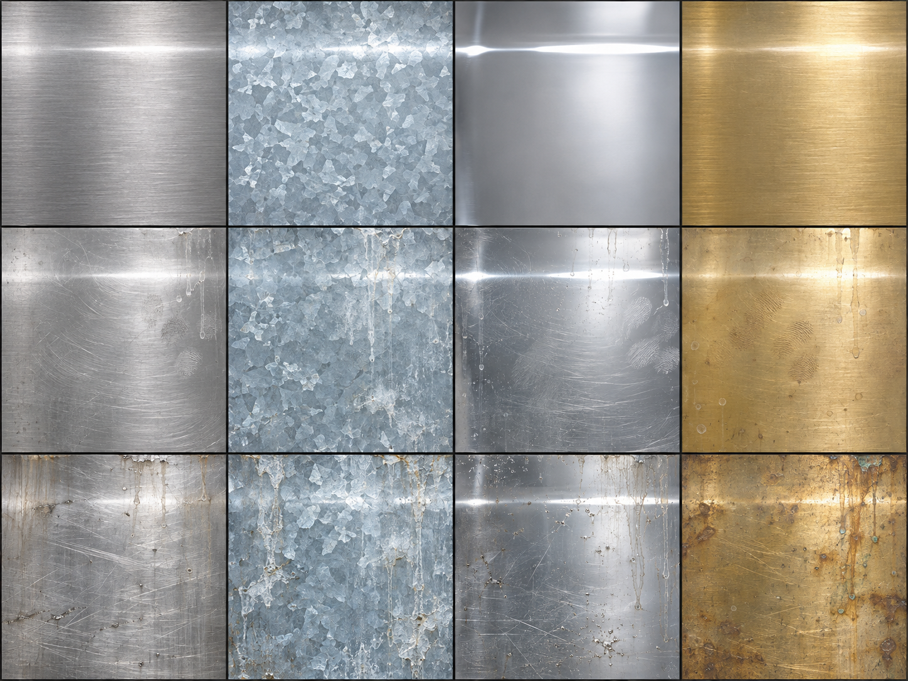
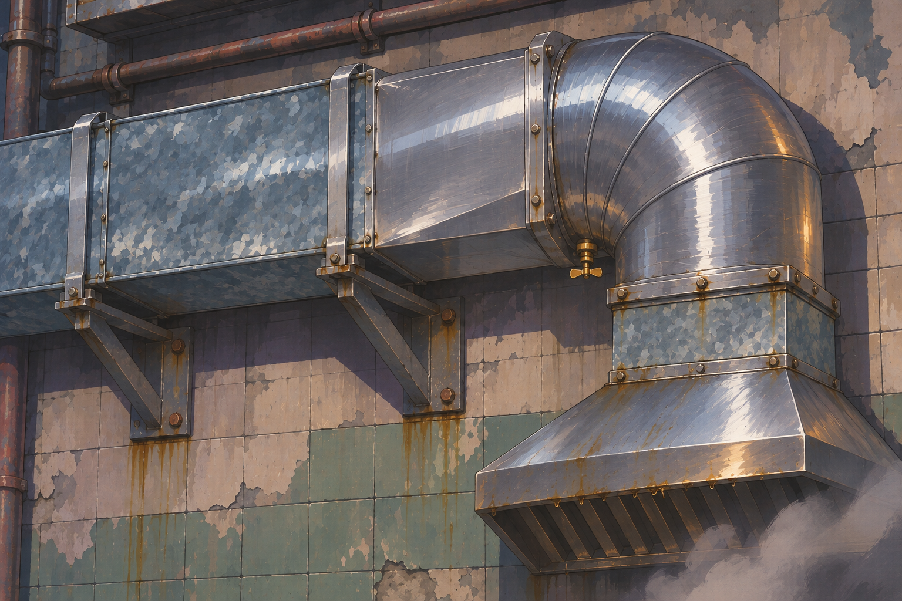
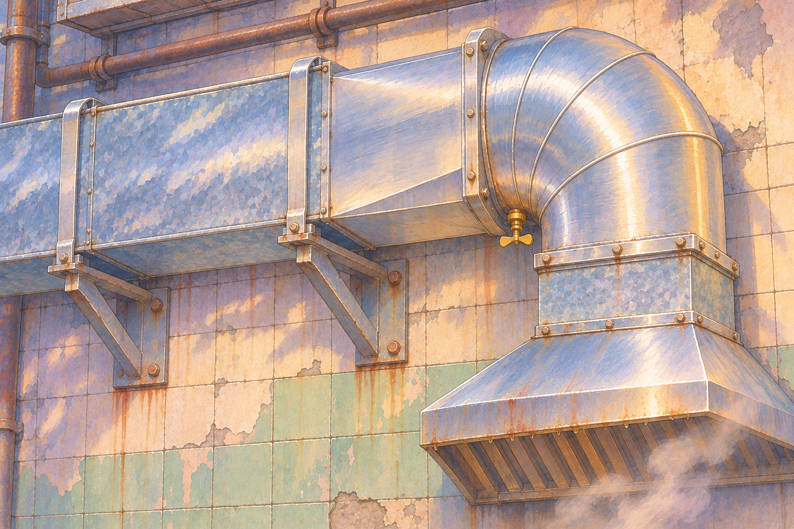

Kowloon material studies
Concrete, ceramic and reflective metal across three levels of wear, with two anime treatments for each scene.
Concrete & render
Blue-gray castSand-gray renderIvory plasterCharcoal aggregate
Low wearMediumHeavy




’90s sci-fi anime

Studio Ghibli-inspiredTenement window wall
Sills concentrate runoff. The newer repair and chipped edges show where the wall’s layers meet.
Ceramic tile
Ivory squareJade rectanglePetrol-blue mosaicRed quarry tile
Low wearMediumHeavy




’90s sci-fi anime

Studio Ghibli-inspiredShop threshold
Glazed wall tiles catch the light above a satin quarry-tile floor. Missing tiles reveal the bedding at the entrance.
Reflective metal
Brushed stainlessGalvanized steelPolished chromeWarm brass
Low wearMediumHeavy




’90s sci-fi anime

Studio Ghibli-inspiredRestaurant exhaust duct
Broad reflections make the folded faces legible. Haze, abrasion and staining gather around the joints.